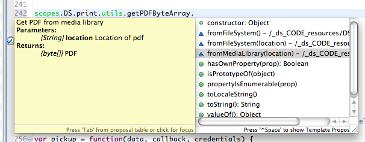

API
The Data Sutra API provides high level code helper functions, triggers for UI actions, and meta data handling.
Usage notes

The Data Sutra API is documented using the latest JSDocs. This gives you code completion and inline code hinting.
To use in an API function, start by typing scopes.DS. and
available nodes and functions with a documentation appear as you choose
items.
Additionally, hovering over any item in an API call will bring up docs for that node or function in a tooltip.
Reference
DS.session
Data objects for the current user session. Sub-objects are not listed here as there is a ton of data. You can inspect the contents of each object several ways (see this post).
- credentials
- solution
- navigation
DS.print
Methods to handling printing.
- preview (reportName,PDFByteArray)
- download (reportName,PDFByteArray)
- trigger (registry)
- utils
- convertToPDFByteArray
- fromServoyForm(formName)
- fromWakandaPage(html file)
- fromHTMLData(html)
- fromHTMLURL(url)
- getPDFByteArray
- fromFileSystem(location)
- fromMediaLibrary(location)
- fromSQLQuery(query string)
- convertToPDFByteArray
DS.transaction
Methods for handling transactions (web client only).
- start(record)
- save(record,onlyRecord)
- cancel(record)
- getStatus()
- toggle(form,toggle)